Rencontre
À Pomy, au-dessus d'Yverdon-les-Bains, Valérie de Roquemaurel souffle le verre. Elle parle vite, rit souvent, se pose mille questions. Au fond de son atelier, un mur entier de boules colorées lui sert de nuancier. Portrait d'une femme aussi vive que la matière qu'elle travaille.
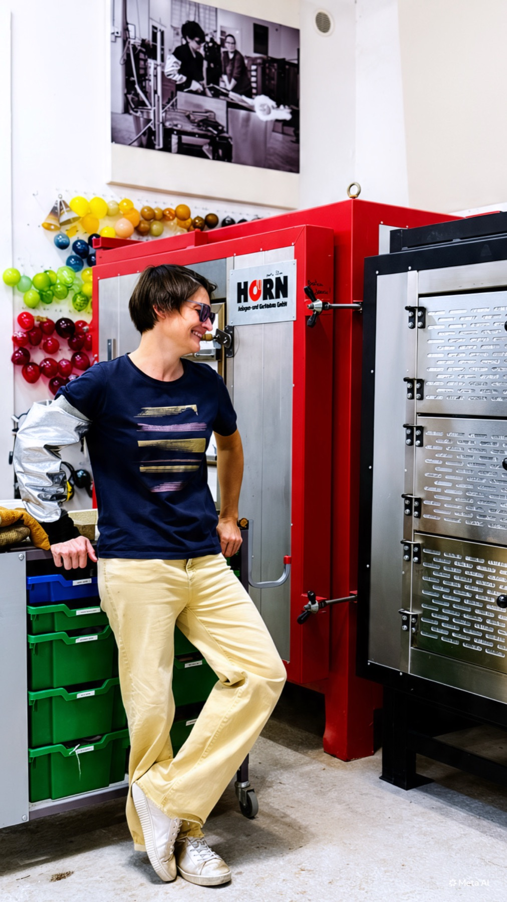
Qui est Valérie
« Je suis souffleuse de verre, mais pas seulement. Moi, j'aime tout, j'aime les défis, je suis curieuse. »
Elle dit avoir « besoin d'être nourrie tout le temps ». Alors elle fait du vélo, de la danse, apprend à piloter des avions. Elle a tenu pendant un temps des chroniques pour un magazine, pour le plaisir de jouer avec les mots.
- Soufflage
- Sablage
- Luminaires
- Vélo
- Danse
- Pilotage
- Chroniques
- Sculpture
trop heureuse et quand je suis triste, je suis trop triste
Valérie se décrit comme hypersensible, « avec les beaux et les mauvais côtés ». Les sens plus développés, l'ouïe, le toucher. Elle peut être émue pour un rien. Depuis quelque temps, elle apprend à gérer « ce trop qu'il y a ».
Le reste du temps, elle se dit « en éternelle contemplation devant le monde », à tout remettre en question. Elle se pose, selon ses mots, « des milliers de questions ».
D'où vient le verre
Toulouse, les lustres de famille et la couleur des vitraux
Le verre l'a-t-il choisie, ou l'inverse ? « Je pense un peu des deux. » Née à Toulouse, elle grandit entre des grands-parents qui collectionnent les pièces des grandes cristalleries françaises, les miroirs, les lustres. Son grand-père maternel, passionné d'art et d'églises, l'emmène voir les vitraux et leur projection de couleurs.
Longtemps, elle ne pense pas que ce soit un métier accessible. Elle étudie dix ans après le bac : histoire de l'art, arts plastiques, puis le design. Elle passe par un atelier de vitrail, puis chez un souffleur au chalumeau qui fabrique des pièces de moteur, « ce n'était pas hyper sexy ». C'est près de Montpellier qu'elle découvre le verre travaillé à la main, en équipe, d'un bout à l'autre de la chaîne.
Apprendre le verre lui prend deux ans de formation, puis des années chez d'autres verriers. « Il faut cinq à sept ans pour apprendre à travailler le verre. » Elle ajoute qu'elle apprend encore tous les jours.
« C'est quand même une matière qui est exceptionnelle et on ne s'en lasse pas. »
Les grandes pièces
« Rien qu'à y penser, j'ai des frissons. »
Un photophore ou un grand vase, le plaisir est le même. Mais les grandes pièces ajoutent quelque chose, dit-elle : l'adrénaline. Beaucoup de verre, une équipe plus importante, un moment précis où tout doit se jouer.
« Il y a vraiment un engagement du corps aussi, c'est lourd, on peut se blesser, on peut se brûler. On ne sait pas si on va y arriver. »
Comme ce ne sont pas les pièces qu'elle vend le plus, ces journées-là deviennent d'autant plus précieuses.
Une matière qui a du caractère
On n'en fait vraiment pas ce qu'on veut.
Si l'on façonne un cube, puis un rond, puis un pavé, la matière garde la trace de chaque étape. « Le verre, il va se souvenir qu'il aura été rond, qu'il aura été cube. » Et le reflet ne pardonne rien quand la forme est torturée. Le verre refroidit vite, se fige, et une fois froid on ne peut plus rien en faire.
C'est précisément ce caractère qui lui plaît.
La collection
Volupté
Au bout de dix ans de métier, quand on dit la matière maîtrisée, Valérie fait l'inverse de ce qu'on attend.
« J'ai voulu désapprendre et la laisser s'exprimer par elle-même. Je le fais partir en transe, et il faut arriver à le figer dans sa transe. »
Volupté, dit-elle, « c'est que de l'accident ». Des nœuds, des vagues, des couleurs qui réagissent chacune à leur façon. Les bleus partent plus vite au soufflage, plus fragiles, plus souples.
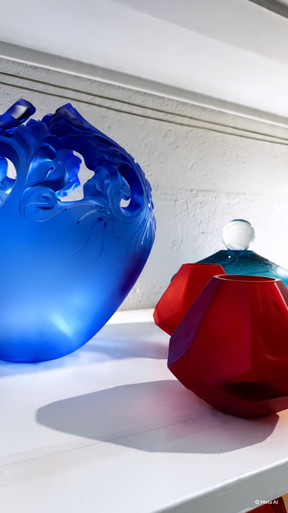
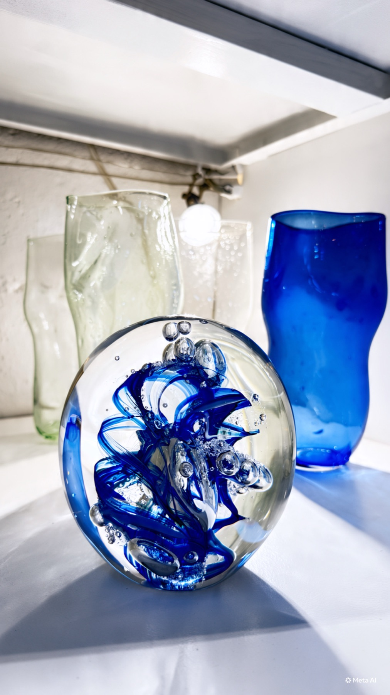
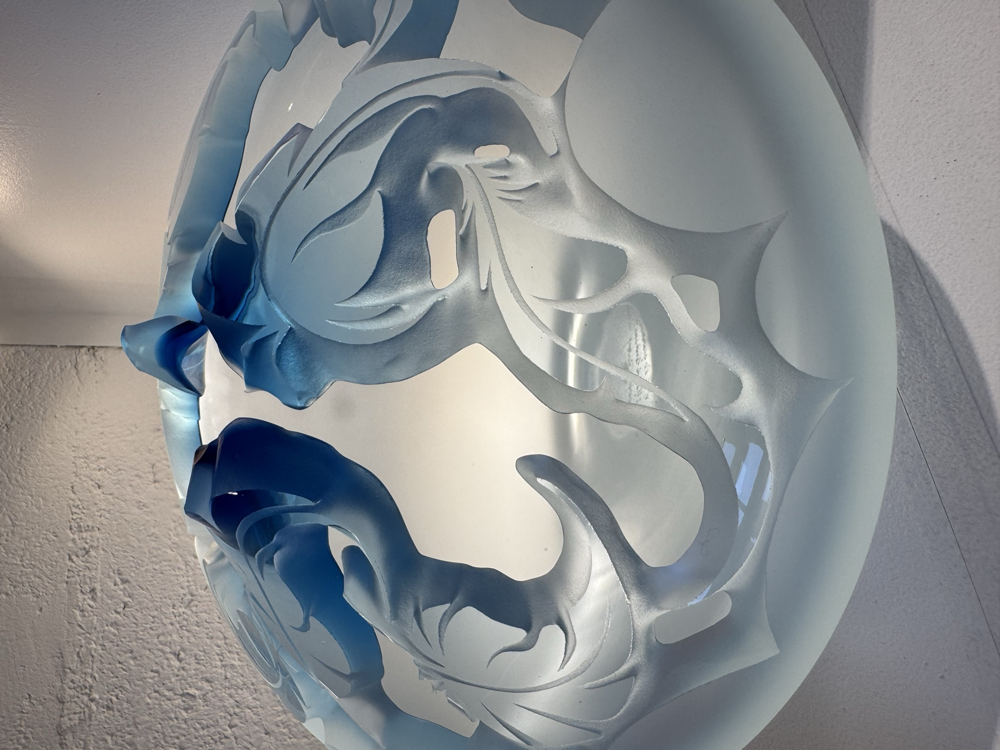
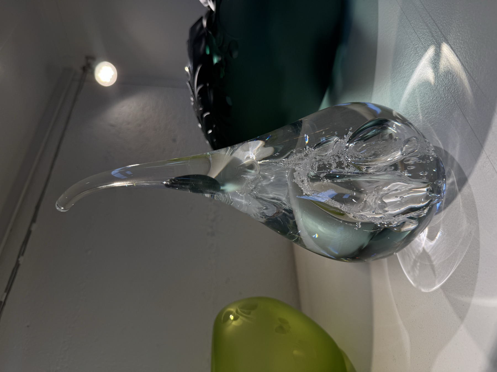
Vingt ans de persévérance
Je les trouve hyper belles, mes gouttes.
Depuis une dizaine d'années, elle réalise des pièces en forme de gouttes pour la ville d'Yverdon-les-Bains. Elle y voit « le cadeau de ces vingt ans de travail » : une élégance « qui n'était pas du tout là au début ». Et un éternel recommencement.
Les luminaires
2,80 met 60 kg de verre, pour une école. Une pièce qu'on regarde des quatre côtés, d'en dessous et d'en dessus.
Ce que Valérie aime dans les luminaires, c'est qu'ils transforment un lieu. Des gens qui passaient là tous les jours, et soudain « ça a changé ». Elle aime aussi la collaboration, faire une pièce en fonction d'un lieu et d'une personne. Pour un client qui ne voulait ni fils visibles ni éblouissement, elle a conçu tout un système de plateformes : « une prouesse technique tout autant qu'une très très belle pièce ».
Un grand luminaire au musée de Romont, un soir de Nuit des musées. Des jeunes se photographient devant. L'un d'eux lui lance :
« Eh madame, si vous voulez, on vous prend en photo. »
« Mais c'est moi qui l'ai fait. »
« Il était trop fan. Je trouve ça hyper joli, en fait. C'est vraiment des moments d'échange et de partage. »
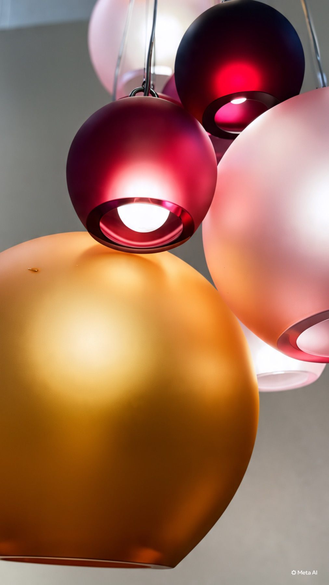
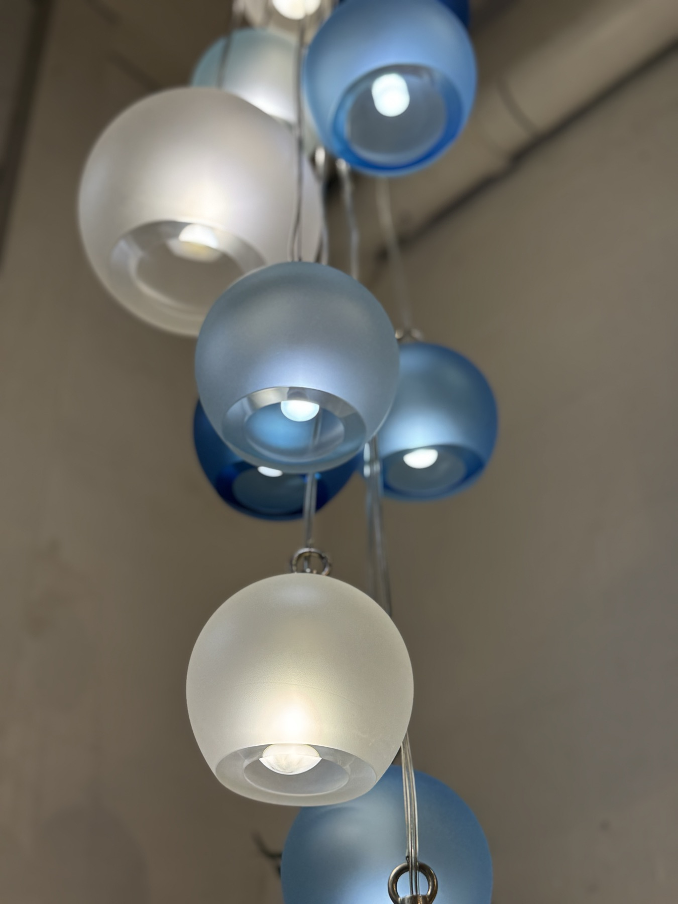
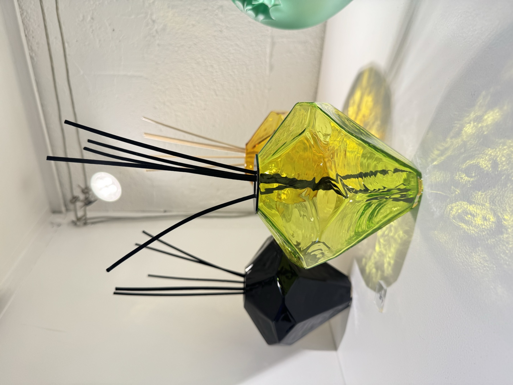
Le mur des couleurs
Chaque boule porte, écrite à la main, la recette de sa teinte.
Rouges, ambres, roses, chartreuse, émeraude, cobalt : ce mur est la mémoire de l'atelier. Choisissez une couleur, la page la prend.
Cobalt
Les guillemets de cette page changent de teinte avec vous.
Apprendre à regarder
Regardez les reflets
Si elle devait apprendre à quelqu'un à voir le verre autrement, elle commencerait par là. Les reflets, « un sujet vaste ». Un rayon de soleil qui traverse une pièce tout d'un coup. Ou ce moment où l'on ne comprend plus comment c'est fait, si c'est creux ou plein.
Elle se méfie de sa propre expertise devant le travail des autres verriers : elle calcule, elle additionne, elle démonte. « Je trouve que la technique, ça tue la poésie. »
« Souvent, c'est mon cœur qui parle. C'est lui qui me dira que ça, c'est beau. »
« Mon cerveau, il sert à lui donner raison. »
Pourquoi la Suisse
Des montagnes qui plongent dans le lac
Après Montpellier, elle part du côté de Nancy pour apprendre à souffler, puis rejoint la Suisse. Ses grands-parents vivaient près de Chamonix, elle a toujours aimé les montagnes, « surtout quand il y a les montagnes qui plongent dans le lac ».
Elle s'installe à Yverdon-les-Bains en 2007, puis à Pomy en 2013, au calme.
« La Suisse n'est pas un pays de tradition verrière, donc je trouvais que ça valait vraiment la peine d'arriver avec ces compétences ici. Et je ne voulais pas faire des petits canards pour les touristes. »
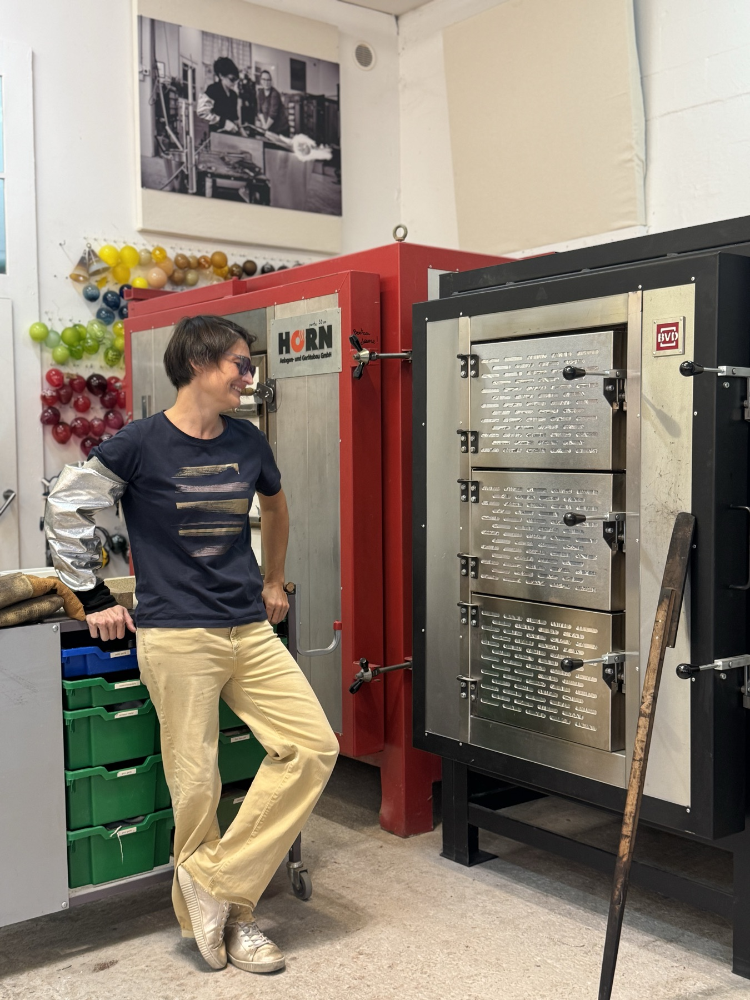
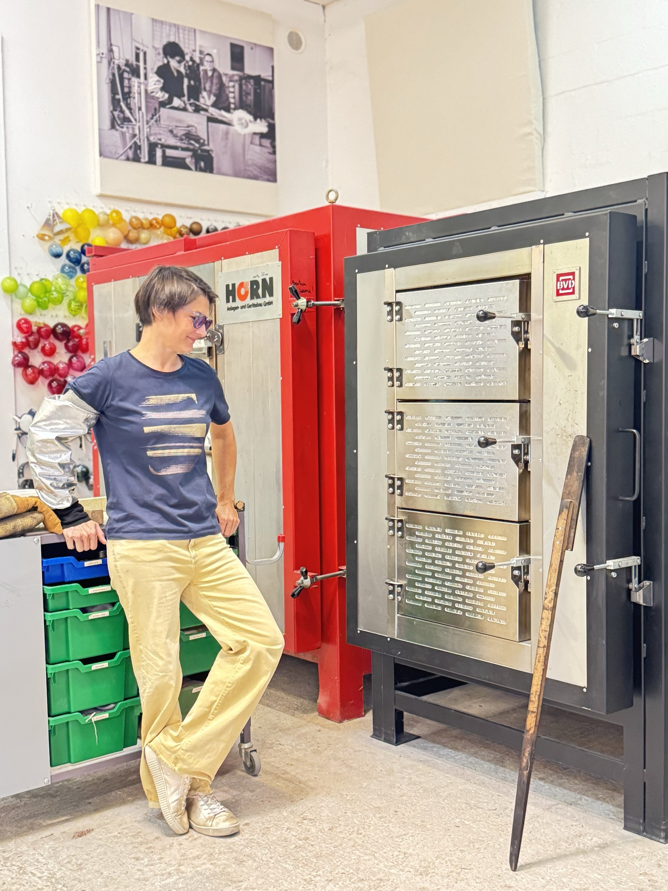
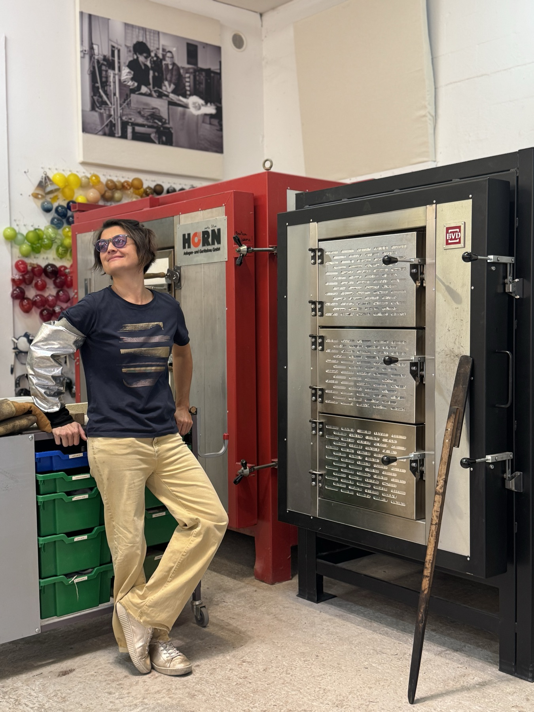
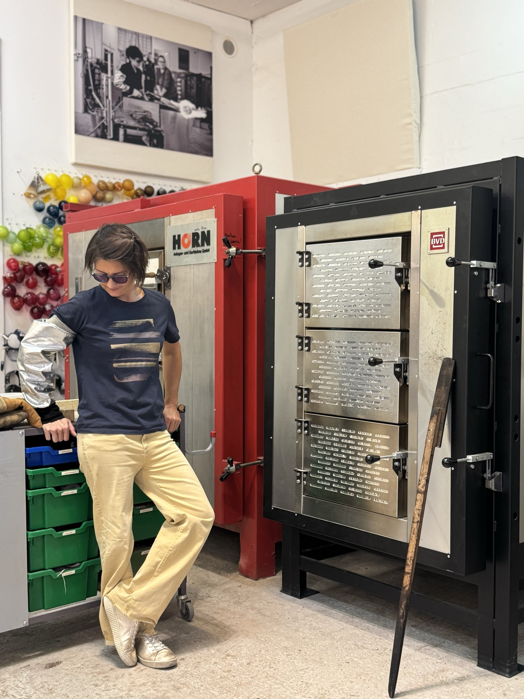
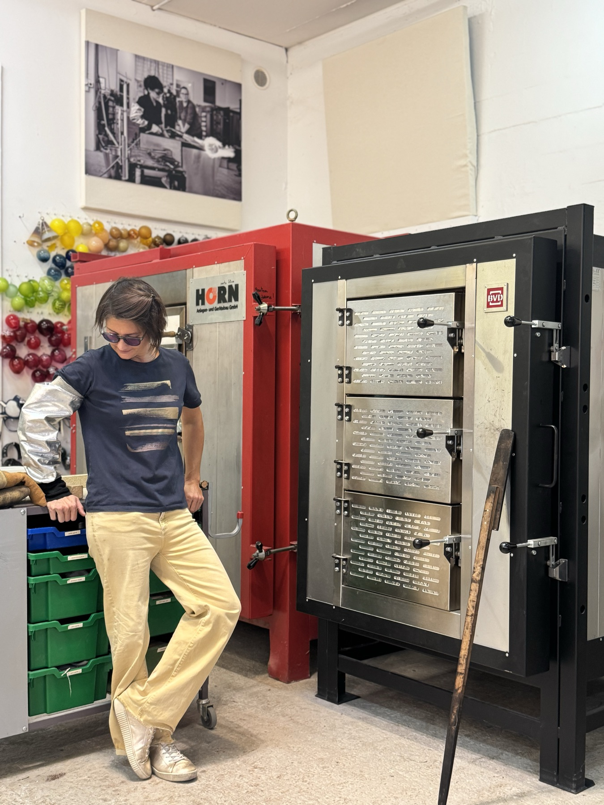
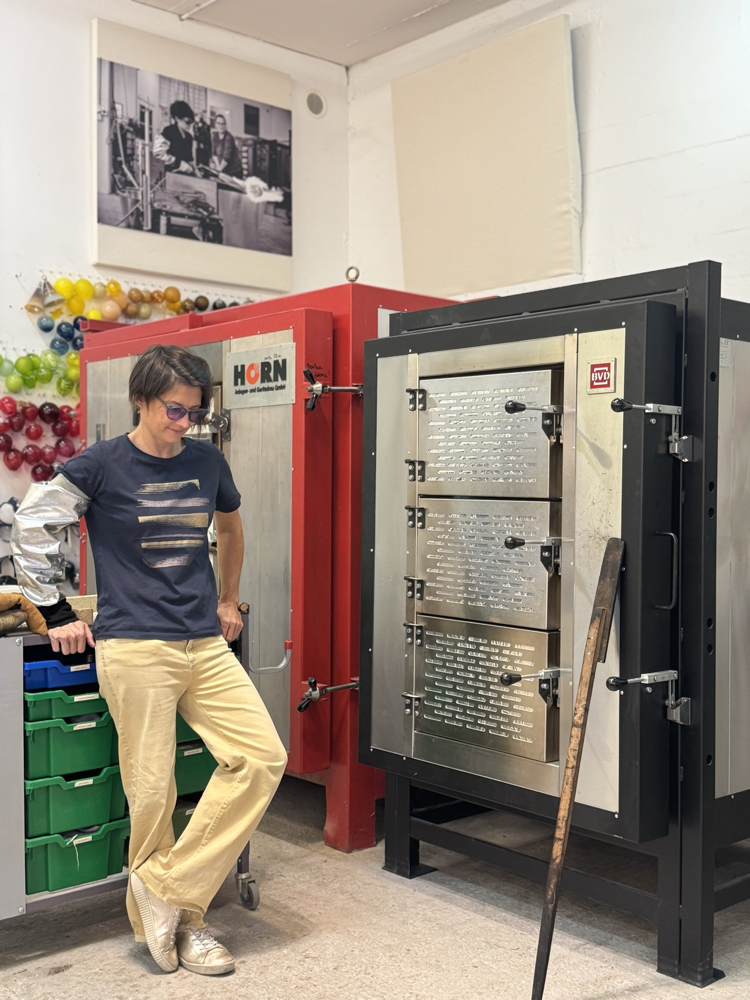
Et si demain
Je construirais une usine pour vraiment du haut de gamme, avec un musée et mon atelier avec des employés. Et moi, je passerais ma vie aux quatre coins du monde avec un papier, un crayon et un ordinateur.
Depuis 2023, elle apprend aussi à « découvrir le monde depuis le ciel ».
Je trouve toujours aussi magique, depuis toutes ces années, cette lumière, ce mouvement, cette danse.
Valérie de Roquemaurel